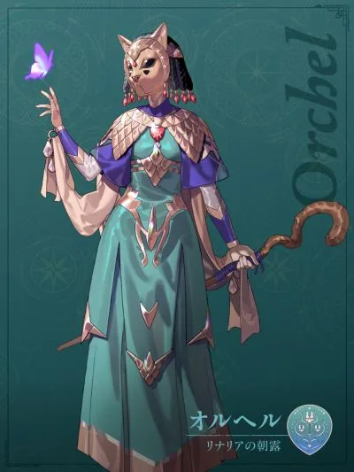

伊修瑪爾救世軍
伊修瑪爾救世軍
以聖光之槍貫穿敵人。對不死繫有特效。
以聖光之槍貫穿敵人。對不死繫有特效，必定命中。
以聖光之槍貫穿敵人。對不死繫有特效。
以聖光之槍貫穿敵人。對不死繫有強特效，必定命中。
以聖光之槍貫穿敵人。對不死繫有強特效，必定命中。
 凱伊利貝拉之風
凱伊利貝拉之風
釋放黑暗之火，使範圍內的格子燃起冥府之火。
在大範圍內釋放黑暗之火，使範圍內的格子燃起冥府之火。
釋放命中即爆炸的黑暗之火，使範圍內的格子燃起冥府之火。（每張地圖限一次）
 迪托利希拉彌努家族
迪托利希拉彌努家族
瞬移至多 3 格，之後仍可攻擊。
瞬移至多 3 格，再使周圍 2 格內的敵人陷入「束縛」。
瞬移至多 5 格，再對攻擊範圍內的敵人造成傷害。
 賽奧朵拉美蓋拉的燈火
賽奧朵拉美蓋拉的燈火
震裂大地，進行投擲攻擊。
進行遠距離投擲攻擊。
進行貫穿敵人的投擲攻擊，必定命中。（每張地圖限一次）
 蕾達薔薇風暴
蕾達薔薇風暴
範圍內友軍力量、魔力 +4，持續到自身下一回合。
範圍內友軍力量、魔力 +7，持續到自身下一回合。取代「熱情之歌」。
範圍內友軍守備、魔防 +4，持續到自身下一回合。
範圍內友軍守備、魔防 +7，持續到自身下一回合。取代「冰水之歌」。
使範圍內的敵人陷入「混亂」。（每張地圖限一次）
範圍內友軍獲得「對不死系特效」，持續到自身下一回合。
召喚魔獸。（每張地圖限一次）
範圍內的友軍可以再次行動。（每張地圖限一次）
 貝爾特蘭炎之鬃
貝爾特蘭炎之鬃
喚醒潛藏的戰鬥力。命中 +50，持續到自身下一回合，之後仍可攻擊。
喚醒潛藏的戰鬥力。防禦 +10，持續到自身下一回合，之後仍可攻擊。
喚醒潛藏的戰鬥力。抗魔 +10，持續到自身下一回合，之後仍可攻擊。
喚醒潛藏的戰鬥本能。迴避 +30，持續到自身下一回合，之後仍可攻擊。
 譚利穆恩月之謊言
譚利穆恩月之謊言
使敵人陷入「癱軟」，持續 1 場戰鬥或 1 回合。癱軟：命中減半。
使敵人陷入「遲緩」，持續 1 場戰鬥或 1 回合。遲緩：攻速減半。
使敵人陷入「厄運」，持續 1 場戰鬥或 1 回合。厄運：幸運減半。
使敵人陷入「力魔反轉」，持續 1 場戰鬥或 1 回合。力魔反轉：力量與魔力互換。
使敵人陷入「守魔反轉」，持續 1 場戰鬥或 1 回合。守魔反轉：守備與魔防互換。

歐露赫露姬金魚草的朝露以光線攻擊大範圍內的敵人。
以光線貫穿敵人。對不死繫有特效。
進入超爆炎狀態，之後仍可攻擊。（每張地圖限一次）
 愛娜特莉亞白鴉新娘團
愛娜特莉亞白鴉新娘團
將體內錘鍊的氣勁釋放為範圍攻擊，可破壞障礙物。
將體內錘鍊的氣勁釋放為範圍攻擊，可破壞障礙物。
將體內錘鍊的氣勁釋放為範圍攻擊，可破壞障礙物。
將體內錘鍊的氣勁釋放為範圍攻擊，可破壞障礙物。
釋放螺旋狀的氣勁，可破壞障礙物。
以奧義之力釋放毀滅性的衝擊波，可破壞障礙物。